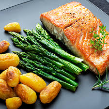

Salmon and asparagus

Description
This is a recipe for salmon, green asparagus and roasted potatoes.
Ingredients:
- Salmon
- Green asparagus
- Small potatoes
- Lemon
- Dill
- Salt
- Pepper
- Olive oil
Recipe:
- Marinade the salmon with olive oil, lemon juice, dill, salt & pepper. Put in oven at 180 degrees for 12 minutes.
- Roast the potatoes and grees aparagus in a pan. Season with salt and pepper.
- Present on a plate with fresh lemon slices.